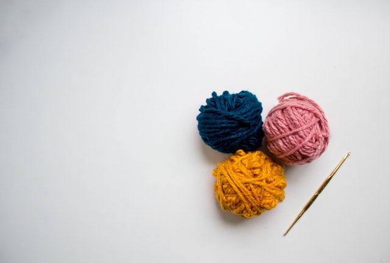

Crocheting 101
Information from WikiHow and Sewing.com

Activity:
Crochet
Tools Needed:
Few
Skill level:
Easy
Tools and Supplies
- Yarn
- Crochet Hooks
- Scissors
- Darning Needle
- Tape Measure
- Hook Organize
- Stitch Markers
- Row Counter / Digital Row Counter
- Stitch Patterns
- Crochet Book
- Crochet Materials Organizer
Directions
- Make a test swatch.
- Crochet a chain.
- Make a slip stitch (abbreviated sl st.) This stitch is used to join work, bind off stitches, reinforce edges or carry yarn to a different working position without adding extra height.
- Make a single crochet (sc).
- Double crochet. Double crochet stitches are great for making sweaters and scarves because they are a bit looser than other stitches (so your sweaters will be more comfy.)